Overview
Sherlock Scenario:
The SOC team received an alert on 21st January 2025 about suspicious activity originating from an employee's system (Alpha). Alpha was not authorized to engage in any offensive hacking activities within the network. The Incident Response (IR) team quickly acted, isolating the system so you can perform a thorough triage and investigation to determine the scope of the breach and potential impact on the network.
-----
Task 1
What is the hostname of the company computer involved in the unauthorized activity?
To determine the hostname of the affected system, the SYSTEM hive was analyzed using Registry Explorer. After loading the SYSTEM hive into Registry Explorer, navigation proceeded to:
SYSTEM -- > ComputerName
This registry key stores the configured hostname of the machine.
Upon examination, the system’s hostname was identified as: HelpDesk
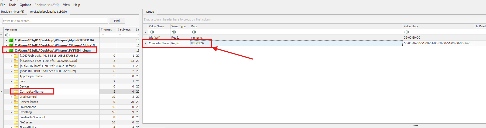
Task 2
What is the IP address associated with the machine?
To identify the IP address assigned to the system, the SYSTEM hive was again analyzed using Registry Explorer.
Rather than examining the ComputerName key, attention was shifted to the network configuration artifacts located under Interfaces
Within the Interfaces subkeys, each GUID represents a network adapter configuration. Reviewing the values associated with the active interface revealed a field labeled DhcpIPAddress, which stores the IPv4 address assigned to the system at the time of the DHCP lease.
From this key, the system’s assigned IP address was identified. Additionally, the DhcpServer value showed: 192.168.159.254 This indicates the DHCP server responsible for assigning the IP address to the host.
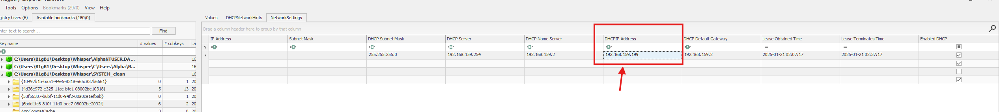
Task 3
What is the Security Identifier (SID) of the computer involved in the incident?
To identify this answer, I once again explored the SAM registry hive. Once in, there was two members:
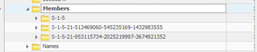
We see two SIDs with one of them being the victim computer.
S-1-5-21-953115734-2025219997-3674921352
Task 4
What was the timezone setting of the machine?
To determine the system’s configured timezone, the SYSTEM hive was examined using Registry Explorer. Navigation proceeded to the following registry key TimeZoneInformation
Within this key, we see the timezone configured on the machine at the time the hive was last written.
Upon reviewing this value, the system’s timezone setting was identified as: Pacific Standard Time
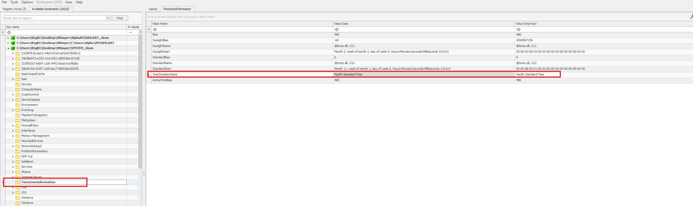
Task 5
Which tool did the attacker use to escalate privileges and extract sensitive credentials from the system?
To identify the tool used by the attacker, multiple forensic artifacts were analyzed, including:
- $MFT (Master File Table)
- $UsnJrnl ($J$)
- Windows Event Logs
During examination of the $MFT, numerous file entries referencing Mimikatz were observed:
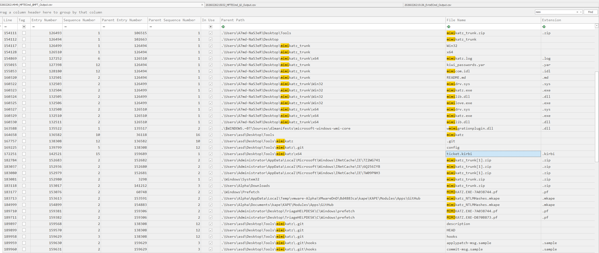
The presence of mimikatz.exe artifacts within the file system metadata indicates execution or staging of the tool on the compromised system.
Mimikatz is a well-known post-exploitation utility commonly used to:
- Dump plaintext credentials from memory
- Extract NTLM password hashes
- Retrieve Kerberos tickets
- Perform Pass-the-Hash and Pass-the-Ticket attacks
Given its functionality and the observed artifacts, it can be concluded that the attacker leveraged Mimikatz to escalate privileges and extract sensitive credentials from the system.
Task 6
What is the timestamp of the last execution of the credential extraction tool on the system used by the attacker?
To determine the last execution time of the credential extraction tool, Windows Prefetch artifacts were analyzed.
Prefetch files track application execution metadata, including:
- Last execution timestamp
- Run count
- File path and associated resources
The Prefetch directory was parsed using PECmd.exe from the Eric Zimmerman tool suite.
After parsing the Prefetch files, the results were filtered for entries related to Mimikatz. The parsed output revealed execution metadata, including the last recorded run time.
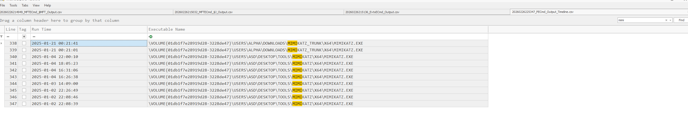
The last execution timestamp of the credential extraction tool was identified as: 2025-01-21 00:21:41
This timestamp represents the most recent recorded execution of Mimikatz on the system.
Task 7
What is the timestamp when the attacker first downloaded the credential extraction tool onto the system?
To identify when the credential extraction tool was first introduced to the system, the $MFT (Master File Table) was analyzed using Timeline Explorer.
Given that the organization detected suspicious activity on January 21, 2025, the analysis was narrowed to that date to streamline the investigation.
Within the $MFT dataset, entries were filtered for references to mimikatz, with particular attention given to:
- File creation events
- User activity associated with the account Alpha
- Timestamps preceding the known execution time
During this review, a file creation event associated with mimikatz and the user Alpha was identified:
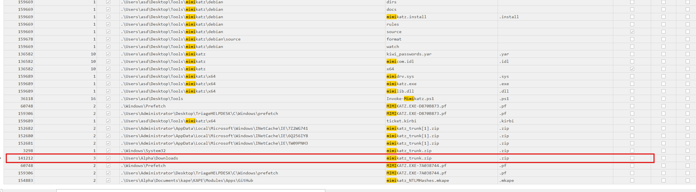
The earliest observed file creation timestamp for the tool was: 2025-01-21 00:19:26
This timestamp represents the first recorded instance of the attacker downloading the credential extraction tool onto the system, occurring shortly before its execution.
Task 8
After using the previously mentioned tool, the attacker downloaded a script to scan the domain controller. What is the URL from which the attacker downloaded this script?
Since the initial download of Mimikatz occurred at 2025-01-21 00:19:26, the investigation focused on artifacts generated after this timestamp.
Several forensic sources were reviewed, including:
- $MFT
- $UsnJrnl
- Windows Event Logs (with emphasis on Event ID 4104 – PowerShell Script Block Logging)
However, these sources did not immediately reveal the script’s download origin.
Given that the attacker likely retrieved the script through a browser session, attention shifted to browser artifacts. Examination of the Microsoft Edge browsing history database located at:
C:\Users\Alpha\AppData\Local\Microsoft\Edge\User Data\Default\History
revealed entries corresponding to suspicious outbound connections.
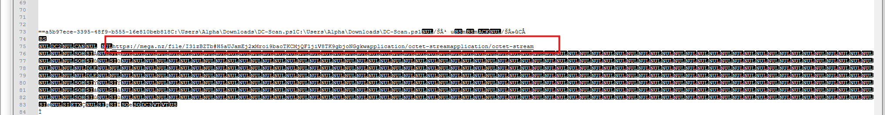
Within the browsing history, a URL was identified showing that the user account Alpha accessed a remote location hosting a malicious script. This URL corresponds to the domain controller scanning script downloaded by the attacker.
This finding confirms that the attacker used the system’s web browser to retrieve the post-exploitation script following credential extraction activities.
Task 9
The filename of the script was identified through analysis of the browser artifact examined in Task 8.
Within the Microsoft Edge browsing history and associated download records, the downloaded file metadata was visible. The screenshot revealed both:
- The remote URL of the script
- The local file path where it was saved
The artifact showed that the attacker saved the script to the following location:
C:\Users\Alpha\Downloads\DC-Scan.ps1
This confirms that the malicious domain controller scanning script was saved locally under the Alpha user’s Downloads directory, retaining the filename DC-Scan.ps1.
The presence of a PowerShell script (.ps1) aligns with post-exploitation behavior commonly used for domain enumeration and lateral movement preparation.
Task 10
What is the timestamp indicating when the attacker deleted the script after it was downloaded?
To determine when the attacker removed the script from the system, the $UsnJrnl ($J) artifact was analyzed.
The USN Journal is particularly valuable in forensic investigations because it records low-level file system change events, including:
- File creation
- Modification
- Renaming
- Deletion
Using Timeline Explorer, the $J file was parsed and filtered for entries related to:
DC-Scan.ps1
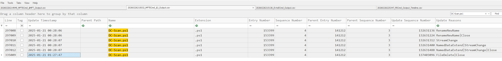
Within the filtered results, an entry with the reason FileDelete was identified. This event indicates that the file was removed from the filesystem.
The timestamp associated with the FileDelete event represents the moment the attacker deleted the script from the system: 2025-01-21 01:27:47
Because the USN Journal logs deletion events even after a file is removed, this artifact provides high-confidence evidence of the exact deletion time.
Task 11
What is the name of the shared file that the attacker accessed?
The question specifically references a shared file, indicating that the artifact likely involves a network path rather than a local file.
During earlier registry analysis, the NTUSER.DAT hive for user Alpha was examined using Registry Explorer. While reviewing user activity artifacts (such as RecentDocs), a reference to a file was identified
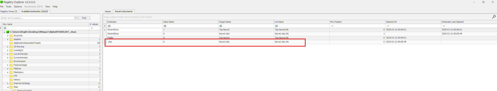
The file observed was: Secret.xlsx
To validate the finding, the file properties were inspected:
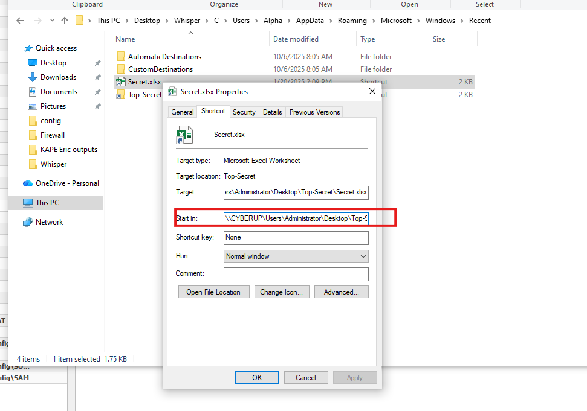
The artifact confirms that the attacker accessed the shared file: \CYBERUP\Users\Administrator\Desktop\Top-Secret\Secret.xlsx
Task 12
To persist, the attacker created a new user account. What is the SID of the newly created account?
To identify whether a new user account was created for persistence, the Windows Security Event Logs were analyzed.
Specifically, the logs were filtered for Event ID 4720, which corresponds to:
“A user account was created.”
Filtering for Event ID 4720 revealed the creation of a new account shortly after the attacker’s post-exploitation activity.
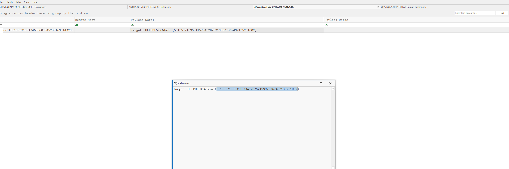
The event details show the following:
- Username: Admin
- Domain: HELPDESK
- SID: S-1-5-21-953115734-2025219997-3674921352-1002
- Time Created: 2025-01-21 01:02:00
This confirms that the attacker established persistence by creating a new local account named Admin, allowing continued access to the system even if the original compromised credentials were revoked.
Task 13
How many times has the newly created user logged in?
Answer: 0 times
To determine whether the newly created account was used after its creation, the Windows Security Event Logs were analyzed.
The investigation focused on:
- Event ID 4624 – Successful logon
- Event ID 4648 – Logon attempt using explicit credentials
An additional filter was applied using the specific SID of the newly created account:
S-1-5-21-953115734-2025219997-3674921352-1002
After executing the search across the Security logs, no matching events were returned.
This indicates that although the attacker created the account (Admin) for persistence at 2025-01-21 01:02:00, there is no evidence that the account was subsequently used to authenticate to the system.
Task 14
What is the password of the newly created user?
Initial analysis focused on identifying whether the password was exposed in clear text through PowerShell activity. Event IDs 4103 (Module Logging) and 4104 (Script Block Logging) were reviewed for evidence of third-party tooling such as PowerView or PowerUp, which had appeared in earlier logs.
However, no PowerShell logs revealed a clear-text password or account creation command containing credential parameters.
Given that direct logging did not reveal the password, the investigation shifted to offline credential extraction using the system registry hives:
- SAM
- SYSTEM
- SECURITY
These hives were extracted and analyzed using Impacket’s secretsdump.py tool from a Parrot OS environment:
python3 /usr/share/doc/python3-impacket/examples/secretsdump.py -sam SAM -security SECURITY -system SYSTEM LOCAL
The output revealed the local account hashes:
Admin:1002:aad3b435b51404eeaad3b435b51404ee:58a478135a93ac3bf058a5ea0e8fdb71:::
The NTLM hash associated with the newly created Admin account was:
58a478135a93ac3bf058a5ea0e8fdb71
To recover the plaintext password, the NTLM hash was cracked using hashcat with mode 1000 (NTLM):
hashcat -m 1000 admin_hash /usr/share/wordlists/rockyou.txt
After running the attack against the rockyou.txt wordlist, the plaintext password for the malicious Admin account was successfully recovered.
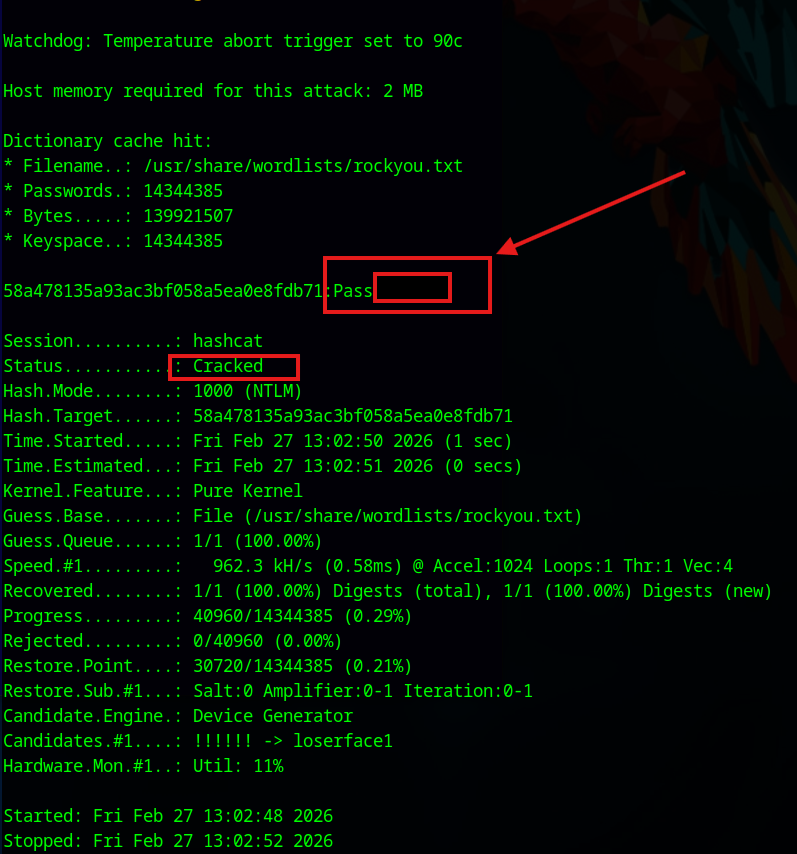